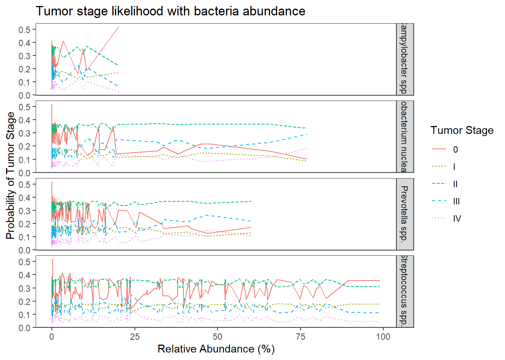
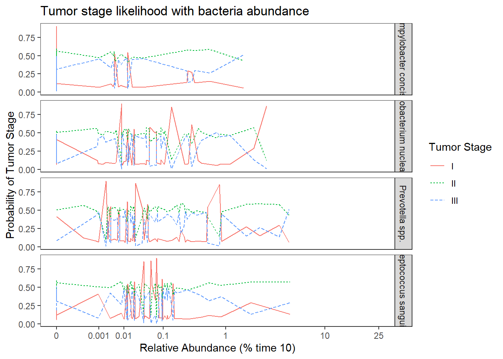
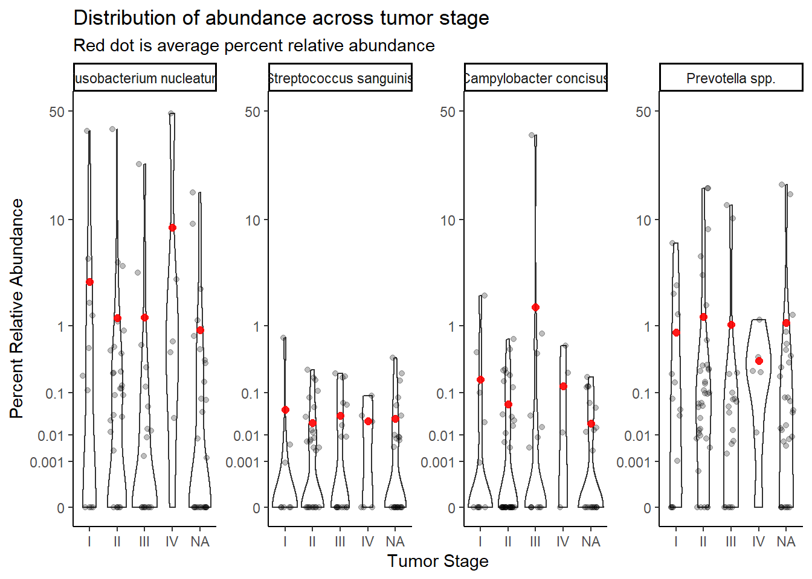
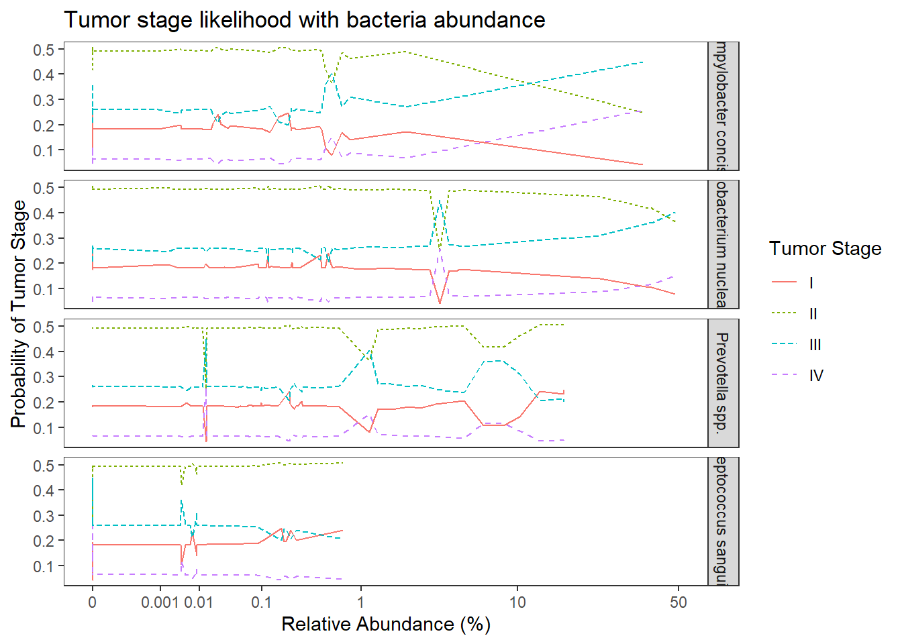
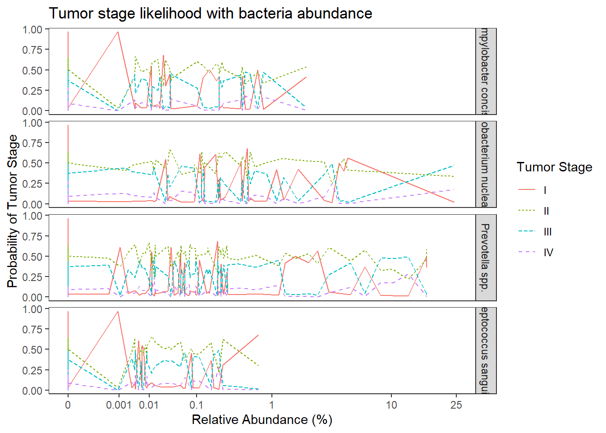

Results for Ordered Logistic Regression Models
Last updated: 2021-03-05
Checks: 6 1
Knit directory: esoph-micro-cancer-workflow/
This reproducible R Markdown analysis was created with workflowr (version 1.6.2). The Checks tab describes the reproducibility checks that were applied when the results were created. The Past versions tab lists the development history.
The R Markdown file has unstaged changes. To know which version of the R Markdown file created these results, you’ll want to first commit it to the Git repo. If you’re still working on the analysis, you can ignore this warning. When you’re finished, you can run wflow_publish to commit the R Markdown file and build the HTML.
Great job! The global environment was empty. Objects defined in the global environment can affect the analysis in your R Markdown file in unknown ways. For reproduciblity it’s best to always run the code in an empty environment.
The command set.seed(20200916) was run prior to running the code in the R Markdown file. Setting a seed ensures that any results that rely on randomness, e.g. subsampling or permutations, are reproducible.
Great job! Recording the operating system, R version, and package versions is critical for reproducibility.
Nice! There were no cached chunks for this analysis, so you can be confident that you successfully produced the results during this run.
Great job! Using relative paths to the files within your workflowr project makes it easier to run your code on other machines.
Great! You are using Git for version control. Tracking code development and connecting the code version to the results is critical for reproducibility.
The results in this page were generated with repository version e3241da. See the Past versions tab to see a history of the changes made to the R Markdown and HTML files.
Note that you need to be careful to ensure that all relevant files for the analysis have been committed to Git prior to generating the results (you can use wflow_publish or wflow_git_commit). workflowr only checks the R Markdown file, but you know if there are other scripts or data files that it depends on. Below is the status of the Git repository when the results were generated:
Ignored files:
Ignored: .Rhistory
Ignored: .Rproj.user/
Ignored: data/
Unstaged changes:
Modified: analysis/ordered-logit-model.Rmd
Modified: analysis/species-sample-type-combined.Rmd
Note that any generated files, e.g. HTML, png, CSS, etc., are not included in this status report because it is ok for generated content to have uncommitted changes.
These are the previous versions of the repository in which changes were made to the R Markdown (analysis/ordered-logit-model.Rmd) and HTML (docs/ordered-logit-model.html) files. If you’ve configured a remote Git repository (see ?wflow_git_remote), click on the hyperlinks in the table below to view the files as they were in that past version.
| File | Version | Author | Date | Message |
|---|---|---|---|---|
| Rmd | e3241da | noah-padgett | 2021-03-05 | updated logistic reg |
| html | e3241da | noah-padgett | 2021-03-05 | updated logistic reg |
| Rmd | cb97ca6 | noah-padgett | 2021-02-25 | updated figures violin |
| Rmd | fe971b9 | noah-padgett | 2021-02-13 | violin plot scale fixed |
| html | fe971b9 | noah-padgett | 2021-02-13 | violin plot scale fixed |
Question 3
Q3: Is fuso associated with tumor stage (pTNM) in either data set? Does X bacteria predict stage? Multivariable w/ age, sex, BMI, history of Barrett'sAdd to this analysis:
- Fusobacterium nucleatum
- Streptococcus sanguinis
- Campylobacter concisus
- Prevotella spp.
TCGA drop “not reported” from tumor stage.
Update as of 2021-03-04
The goal of this analysis is still to answer the question posed above. However, the methods by which this is done has been expanded upon and the model has been built to be as interpretable as possible. In the results, a deeper explanation of the results is given to help explain the effects of adding covariates and how to interpret the parameters. In general, the model is set up to model how the probability of being in higher tumor stage depends on the individual characteristics of the study participants. Let \(TS\) represents the tumor stage with levels \(j = 1, 2, ..., J\) (TS have levels 0, 1, I, II, III, and IV). We aim to model the odds of being less than or equal to a particular category \[\frac{Pr(TS\leq j)}{Pr(TS> j)}, j = 1, 2, ..., J-1\] We aim to model the logit, which is \[log\left(\frac{Pr(TS\leq j)}{Pr(TS> j)}\right)=logit\left(Pr(TS\leq j)\right)=\beta_{0j}-\left(\eta_1x_1+\eta_2x_2+...+\eta_px_p\right)\] where the terms on the right represent how R parameterizes the ordered logit model with \(\beta_{0j}\) being the intercept/threshold parameter separating category \(j\) from \(j+1\). The \(\eta_p\) regression weights represent the change in logits. A major assumption of the ordered logit model, as parameterized here, is the parallel lines assumption. This means the even though the intercepts differ separate the categories, the regression weights are equal for each successive category.
NCI 16s data
Double Checking Data
# in long format
table(dat.16s$tumor.stage)
0 1 I II III IV
11088 264 6336 13464 6072 2640 # by subject
dat <- dat.16s %>% filter(OTU == "Fusobacterium_nucleatum")
table(dat$tumor.stage)
0 1 I II III IV
42 1 24 51 23 10 sum(table(dat$tumor.stage)) # sample size match[1] 151mean.dat <- dat.16s.s %>%
group_by(tumor.stage, OTU) %>%
summarize(M = mean(Abundance))`summarise()` has grouped output by 'tumor.stage'. You can override using the `.groups` argument.ggplot(dat.16s.s, aes(x=tumor.stage, y=Abundance))+
geom_violin()+
geom_jitter(alpha=0.25,width = 0.25)+
geom_point(data=mean.dat, aes(x=tumor.stage, y = M), size=2, alpha =0.9, color="red")+
labs(x="Tumor Stage", y="Percent Relative Abundance",
title="Distribution of abundance across tumor stage",
subtitle="Red dot is average percent relative abundance")+
scale_y_continuous(trans="pseudo_log")+
facet_wrap(.~OTU, nrow=1, scales="free")+
theme_classic()
NOTE the bacteria were not uniquely defined for 16S data. That means that these are the bacteria truly used:
- “Fusobacterium_nucleatum”
- Streptococcus spp. = “Streptococcus_dentisani:Streptococcus_infantis:Streptococcus_mitis:Streptococcus_oligofermentans:Streptococcus_oralis:Streptococcus_pneumoniae:Streptococcus_pseudopneumoniae:Streptococcus_sanguinis”,
- Campylobacter spp. = “Campylobacter_rectus:Campylobacter_showae”,
- Prevotella spp. = “Prevotella_melaninogenica”
Stage “1” has only 1 unique sample and will be dropped from subsequent analyses. And remove NA values (7).
dat.16s.s <- dat.16s.s %>%
filter(tumor.stage != "1")%>%
mutate(tumor.stage = droplevels(tumor.stage, exclude=c("1",NA)))Now, transform data into a useful wide-format representation to avoid inflating sample size. The long-format above is very useful for making plots, but less useful for the ordered logistic regression to follow.
dat.16s.wide <- dat.16s.s %>%
dplyr::select(OTU, Abundance, Sample.ID, BarrettsHist, bar.c, female, female.c, age.c,BMI.n, bmi.c, sample_type, tumor.cat, tumor.stage) %>%
pivot_wider(names_from = OTU, values_from = Abundance)Ordered Logistic Regression
Model 0: TS ~ 1
This in the intercept only model. Implying that we will only estimate the unique intercepts for the \(J-1\) categories.
## fit ordered logit model and store results 'm'
# use only 1 bacteria
fit <- fit0 <- MASS::polr(tumor.stage ~ 1, data = filter(dat.16s.s, OTU =="Fusobacterium nucleatum"), Hess=TRUE)
## view a summary of the model
summary(fit)Call:
MASS::polr(formula = tumor.stage ~ 1, data = filter(dat.16s.s,
OTU == "Fusobacterium nucleatum"), Hess = TRUE)
No coefficients
Intercepts:
Value Std. Error t value
0|I -0.945 0.182 -5.194
I|II -0.241 0.164 -1.467
II|III 1.266 0.197 6.421
III|IV 2.639 0.327 8.062
Residual Deviance: 445.35
AIC: 453.35 # save fitted probabilities
# these represent the estimated probability of each tumor stage
pp <- fitted(fit)
pp[1,] 0 I II III IV
0.27997 0.15998 0.34002 0.15335 0.06668 The model can be more fully described as \[\begin{align*} logit\left(Pr(TS\leq 0)\right)&=-0.95\\ logit\left(Pr(TS\leq I)\right)&=-0.24\\ logit\left(Pr(TS\leq II)\right)&=1.27\\ logit\left(Pr(TS\leq III)\right)&=2.64\\ \end{align*}\]
Interpreting the intercepts only model is relatively straightforward. The main interpretation we can obtain from this base model is the probability of each category. We obtain these probabilities by applying the inverse-logit transformation to obtain each of the cumulative probabilities and then use the relevant probabilities to compute each individual category probability. That is, \[\begin{align*} Pr(TS = 0)&= Pr(TS\leq 0) = 0.28\\ Pr(TS = I)&=Pr(TS\leq I) - Pr(TS\leq 0)= 0.44-0.28 =0.16\\ Pr(TS = II)&=Pr(TS\leq II) - Pr(TS\leq I) = 0.78 - 0.44 = 0.34 \\ Pr(TS = III)&=Pr(TS\leq III) - Pr(TS\leq II) =0.93-0.78=0.15\\ Pr(TS = IV)&=1 - Pr(TS\leq IV) =1-0.93=0.07,\\ \end{align*}\] which, in all is not very informative. More information is definately gained as predictors/covariates are introduced.
Model 1: TS ~ OTU
This model expands on the previous model to include OTU abundance as a predictor of TS. OTU abundance is captured by four variables as predictors of TS (the four OTUs listed at the top of this document).
dat0 <- dat.16s.wide
## fit ordered logit model and store results 'm'
fit <- fit1 <- MASS::polr(tumor.stage ~ 1 + `Fusobacterium nucleatum` + `Streptococcus spp.*` + `Campylobacter spp.*` + `Prevotella spp.`, data = dat.16s.wide, Hess=TRUE)
## view a summary of the model
summary(fit)Call:
MASS::polr(formula = tumor.stage ~ 1 + `Fusobacterium nucleatum` +
`Streptococcus spp.*` + `Campylobacter spp.*` + `Prevotella spp.`,
data = dat.16s.wide, Hess = TRUE)
Coefficients:
Value Std. Error t value
`Fusobacterium nucleatum` 0.013240 0.01245 1.0639
`Streptococcus spp.*` 0.000488 0.00577 0.0846
`Campylobacter spp.*` -0.037641 0.07027 -0.5357
`Prevotella spp.` 0.015590 0.01532 1.0178
Intercepts:
Value Std. Error t value
0|I -0.821 0.274 -3.001
I|II -0.106 0.267 -0.397
II|III 1.424 0.290 4.907
III|IV 2.803 0.390 7.186
Residual Deviance: 442.49
AIC: 458.49 anova(fit1, fit0) # Chi-square difference testLikelihood ratio tests of ordinal regression models
Response: tumor.stage
Model
1 1
2 1 + `Fusobacterium nucleatum` + `Streptococcus spp.*` + `Campylobacter spp.*` + `Prevotella spp.`
Resid. df Resid. Dev Test Df LR stat. Pr(Chi)
1 146 445.3
2 142 442.5 1 vs 2 4 2.864 0.5809# obtain approximate p-values
ctable <- coef(summary(fit))
p <- pnorm(abs(ctable[, "t value"]), lower.tail = FALSE) * 2
(ctable <- cbind(ctable, "p value" = p)) Value Std. Error t value p value
`Fusobacterium nucleatum` 0.0132397 0.012445 1.06385 2.874e-01
`Streptococcus spp.*` 0.0004884 0.005772 0.08461 9.326e-01
`Campylobacter spp.*` -0.0376410 0.070265 -0.53570 5.922e-01
`Prevotella spp.` 0.0155899 0.015317 1.01780 3.088e-01
0|I -0.8207942 0.273501 -3.00106 2.690e-03
I|II -0.1057784 0.266764 -0.39652 6.917e-01
II|III 1.4243029 0.290278 4.90669 9.263e-07
III|IV 2.8030741 0.390066 7.18615 6.664e-13# obtain CIs
(ci <- confint(fit)) # CIs assuming normalityWaiting for profiling to be done... 2.5 % 97.5 %
`Fusobacterium nucleatum` -0.01124 0.03852
`Streptococcus spp.*` -0.01089 0.01180
`Campylobacter spp.*` -0.19516 0.09332
`Prevotella spp.` -0.01508 0.04568## OR and CI
exp(cbind(OR = coef(fit), ci)) OR 2.5 % 97.5 %
`Fusobacterium nucleatum` 1.0133 0.9888 1.039
`Streptococcus spp.*` 1.0005 0.9892 1.012
`Campylobacter spp.*` 0.9631 0.8227 1.098
`Prevotella spp.` 1.0157 0.9850 1.047# save fitted logits
pp <- fitted(fit)
# predictive data
dat0 <- cbind(dat0, predict(fit, newdata = dat.16s.wide, "probs"))
## melt data set to long for ggplot2
dat1 <- dat0 %>%
pivot_longer(
cols=`0`:`IV`,
names_to = "TS",
values_to = "Pred.Prob"
) %>%
pivot_longer(
cols=`Streptococcus spp.*`:`Campylobacter spp.*`,
names_to="OTU",
values_to="Abundance"
)
## plot predicted probabilities across Abundance values for each level of OTU
## facetted by tumor.stage
ggplot(dat1, aes(x = Abundance, y = Pred.Prob, color=TS, group=TS, linetype=TS)) +
geom_line() +
facet_grid(OTU ~., scales="free")+
labs(y="Probability of Tumor Stage",
x="Relative Abundance (%)",
title="Tumor stage likelihood with bacteria abundance",
color="Tumor Stage", linetype="Tumor Stage")+
theme(
panel.grid = element_blank()
)The results from the model when the abundance of the four OTUs are included in the model becomes a bit more complicated. First of all, the model with OTU abundances did not fit better in terms of AIC, BIC, and no difference was found from a chi-square difference test.
For interpretation purposes, the following is how to interpret the effects of OTU abundance on predicting tumor stage. First, the logit model is \[\begin{align*} logit\left(Pr(TS\leq 0)\right)&=-0.95\\ logit\left(Pr(TS\leq I)\right)&=-0.24\\ logit\left(Pr(TS\leq II)\right)&=1.27\\ logit\left(Pr(TS\leq III)\right)&=2.64\\ \end{align*}\] While interpreting the odds ratios can be done as follows. First, take Streptococcus spp., the OR was 1.00 95% CI (0.99, 1.01). This implies that for individuals who had a 1% higher relative abundance of Streptococcus spp., the odds of being in a higher tumor stage is multiplied 1.00 times (i.e., 0% increase on average) holding the abundance of other OTUs constant. This means that the knowledge of relative abundance of Strepto was not informative over the base probability we estimated in model 0.
For Fusobacterium nucleatum (OR = 1.01, 95% CI [0.99, 1.04]) and Prevotella spp. (OR = 1.01, 95% CI [0.99, 1.05]), the interpretation is as follows because the OR is the same. For individuals who had a 1% higher relative abundance of this OTU (Fuso. or Prevo.), the odds of being in a higher tumor stage is multiplied 1.01 times (i.e., about a 1% increase on average) holding the abundance of other OTUs constant.
Model 2: TS ~ OTU + COVARIATES
dat0 <- dat.16s.wide
## fit ordered logit model and store results 'm'
fit <- fit2 <- MASS::polr(tumor.stage ~ 1+ `Fusobacterium nucleatum` + `Streptococcus spp.*` + `Campylobacter spp.*` + `Prevotella spp.` + age.c + female.c + bmi.c + bar.c, data = dat.16s.wide, Hess=TRUE)
## view a summary of the model
summary(fit)Call:
MASS::polr(formula = tumor.stage ~ 1 + `Fusobacterium nucleatum` +
`Streptococcus spp.*` + `Campylobacter spp.*` + `Prevotella spp.` +
age.c + female.c + bmi.c + bar.c, data = dat.16s.wide, Hess = TRUE)
Coefficients:
Value Std. Error t value
`Fusobacterium nucleatum` 0.01447 0.01264 1.1453
`Streptococcus spp.*` 0.00250 0.00589 0.4240
`Campylobacter spp.*` -0.03350 0.07537 -0.4444
`Prevotella spp.` 0.01515 0.01595 0.9501
age.c -0.00415 0.01371 -0.3025
female.c -0.01082 0.43529 -0.0248
bmi.c -0.01602 0.02275 -0.7043
bar.c 0.62262 0.34717 1.7934
Intercepts:
Value Std. Error t value
0|I -0.776 0.276 -2.812
I|II -0.051 0.270 -0.187
II|III 1.500 0.295 5.080
III|IV 2.892 0.394 7.334
Residual Deviance: 438.63
AIC: 462.63 anova(fit2, fit0) # Chi-square difference testLikelihood ratio tests of ordinal regression models
Response: tumor.stage
Model
1 1
2 1 + `Fusobacterium nucleatum` + `Streptococcus spp.*` + `Campylobacter spp.*` + `Prevotella spp.` + age.c + female.c + bmi.c + bar.c
Resid. df Resid. Dev Test Df LR stat. Pr(Chi)
1 146 445.3
2 138 438.6 1 vs 2 8 6.715 0.5677# obtain approximate p-values
ctable <- coef(summary(fit))
p <- pnorm(abs(ctable[, "t value"]), lower.tail = FALSE) * 2
(ctable <- cbind(ctable, "p value" = p)) Value Std. Error t value p value
`Fusobacterium nucleatum` 0.014473 0.012636 1.14533 2.521e-01
`Streptococcus spp.*` 0.002499 0.005893 0.42397 6.716e-01
`Campylobacter spp.*` -0.033496 0.075370 -0.44442 6.567e-01
`Prevotella spp.` 0.015152 0.015948 0.95008 3.421e-01
age.c -0.004149 0.013715 -0.30249 7.623e-01
female.c -0.010816 0.435289 -0.02485 9.802e-01
bmi.c -0.016024 0.022751 -0.70430 4.812e-01
bar.c 0.622623 0.347169 1.79343 7.290e-02
0|I -0.775974 0.275914 -2.81238 4.918e-03
I|II -0.050542 0.270417 -0.18691 8.517e-01
II|III 1.500106 0.295276 5.08035 3.767e-07
III|IV 2.892116 0.394360 7.33369 2.239e-13# obtain CIs
(ci <- confint(fit)) # CIs assuming normalityWaiting for profiling to be done... 2.5 % 97.5 %
`Fusobacterium nucleatum` -0.010312 0.04018
`Streptococcus spp.*` -0.009111 0.01405
`Campylobacter spp.*` -0.199242 0.10805
`Prevotella spp.` -0.016973 0.04624
age.c -0.031171 0.02275
female.c -0.873271 0.83890
bmi.c -0.061385 0.02842
bar.c -0.056145 1.30794## OR and CI
exp(cbind(OR = coef(fit), ci)) OR 2.5 % 97.5 %
`Fusobacterium nucleatum` 1.0146 0.9897 1.041
`Streptococcus spp.*` 1.0025 0.9909 1.014
`Campylobacter spp.*` 0.9671 0.8194 1.114
`Prevotella spp.` 1.0153 0.9832 1.047
age.c 0.9959 0.9693 1.023
female.c 0.9892 0.4176 2.314
bmi.c 0.9841 0.9405 1.029
bar.c 1.8638 0.9454 3.699# save fitted logits
pp <- fitted(fit)
# predictive data
dat0 <- cbind(dat0, predict(fit, newdata = dat.16s.wide, "probs"))
## melt data set to long for ggplot2
dat1 <- dat0 %>%
pivot_longer(
cols=`0`:`IV`,
names_to = "TS",
values_to = "Pred.Prob"
) %>%
pivot_longer(
cols=`Streptococcus spp.*`:`Campylobacter spp.*`,
names_to="OTU",
values_to="Abundance"
)
## plot predicted probabilities across Abundance values for each level of OTU
## facetted by tumor.stage
ggplot(dat1, aes(x = Abundance, y = Pred.Prob, color=TS, group=TS, linetype=TS)) +
geom_line() +
facet_grid(OTU ~., scales="free")+
labs(y="Probability of Tumor Stage",
x="Relative Abundance (%)",
title="Tumor stage likelihood with bacteria abundance",
color="Tumor Stage", linetype="Tumor Stage")+
theme(
panel.grid = element_blank()
)
No significant changes. Everything is still insignificant. For interpretation purposes, the results in from this model can be interpreted the same as the previous because all covariates were mean-centered.
Proportional Odds Assumption
dat.16s.wide <- dat.16s.wide %>%
mutate(
T0 = I(as.numeric(tumor.stage) >= 1),
TI = I(as.numeric(tumor.stage) >= 2),
TII = I(as.numeric(tumor.stage) >= 3),
TIII = I(as.numeric(tumor.stage) >= 4),
TIV = I(as.numeric(tumor.stage) >= 5),
)
apply(dat.16s.wide[,c('TI','TII','TIII', 'TIV')],2, table) TI TII TIII TIV
FALSE 42 66 117 140
TRUE 108 84 33 10summary(glm(TI ~ 1 + `Fusobacterium nucleatum` + `Streptococcus spp.*` + `Campylobacter spp.*` + `Prevotella spp.`+ age.c + female.c + bmi.c + bar.c, data = dat.16s.wide, family=binomial(link="logit")))
Call:
glm(formula = TI ~ 1 + `Fusobacterium nucleatum` + `Streptococcus spp.*` +
`Campylobacter spp.*` + `Prevotella spp.` + age.c + female.c +
bmi.c + bar.c, family = binomial(link = "logit"), data = dat.16s.wide)
Deviance Residuals:
Min 1Q Median 3Q Max
-2.001 -1.186 0.624 0.828 1.259
Coefficients:
Estimate Std. Error z value Pr(>|z|)
(Intercept) 0.49816 0.30842 1.62 0.106
`Fusobacterium nucleatum` 0.06398 0.04394 1.46 0.145
`Streptococcus spp.*` 0.01025 0.00768 1.34 0.182
`Campylobacter spp.*` 0.00351 0.11131 0.03 0.975
`Prevotella spp.` 0.01499 0.02613 0.57 0.566
age.c 0.00969 0.01783 0.54 0.587
female.c -0.16395 0.51003 -0.32 0.748
bmi.c 0.01611 0.03096 0.52 0.603
bar.c 0.88774 0.44663 1.99 0.047 *
---
Signif. codes: 0 '***' 0.001 '**' 0.01 '*' 0.05 '.' 0.1 ' ' 1
(Dispersion parameter for binomial family taken to be 1)
Null deviance: 177.89 on 149 degrees of freedom
Residual deviance: 163.73 on 141 degrees of freedom
AIC: 181.7
Number of Fisher Scoring iterations: 6summary(glm(TII ~ 1 + `Fusobacterium nucleatum` + `Streptococcus spp.*` + `Campylobacter spp.*` + `Prevotella spp.`+ age.c + female.c + bmi.c + bar.c, data = dat.16s.wide, family=binomial(link="logit")))
Call:
glm(formula = TII ~ 1 + `Fusobacterium nucleatum` + `Streptococcus spp.*` +
`Campylobacter spp.*` + `Prevotella spp.` + age.c + female.c +
bmi.c + bar.c, family = binomial(link = "logit"), data = dat.16s.wide)
Deviance Residuals:
Min 1Q Median 3Q Max
-1.489 -1.212 0.704 1.108 1.499
Coefficients:
Estimate Std. Error z value Pr(>|z|)
(Intercept) 0.000384 0.283602 0.00 0.999
`Fusobacterium nucleatum` 0.073311 0.038078 1.93 0.054 .
`Streptococcus spp.*` 0.003275 0.006798 0.48 0.630
`Campylobacter spp.*` -0.059713 0.088063 -0.68 0.498
`Prevotella spp.` -0.001872 0.020207 -0.09 0.926
age.c -0.014604 0.015986 -0.91 0.361
female.c 0.402529 0.486388 0.83 0.408
bmi.c 0.006519 0.026552 0.25 0.806
bar.c 0.486287 0.399061 1.22 0.223
---
Signif. codes: 0 '***' 0.001 '**' 0.01 '*' 0.05 '.' 0.1 ' ' 1
(Dispersion parameter for binomial family taken to be 1)
Null deviance: 205.78 on 149 degrees of freedom
Residual deviance: 195.34 on 141 degrees of freedom
AIC: 213.3
Number of Fisher Scoring iterations: 5summary(glm(TIII ~ 1 + `Fusobacterium nucleatum` + `Streptococcus spp.*` + `Campylobacter spp.*` + `Prevotella spp.`+ age.c + female.c + bmi.c + bar.c, data = dat.16s.wide, family=binomial(link="logit")))
Call:
glm(formula = TIII ~ 1 + `Fusobacterium nucleatum` + `Streptococcus spp.*` +
`Campylobacter spp.*` + `Prevotella spp.` + age.c + female.c +
bmi.c + bar.c, family = binomial(link = "logit"), data = dat.16s.wide)
Deviance Residuals:
Min 1Q Median 3Q Max
-1.347 -0.756 -0.576 -0.202 2.107
Coefficients:
Estimate Std. Error z value Pr(>|z|)
(Intercept) -1.26111 0.36325 -3.47 0.00052 ***
`Fusobacterium nucleatum` -0.01641 0.02223 -0.74 0.46031
`Streptococcus spp.*` -0.00693 0.00900 -0.77 0.44116
`Campylobacter spp.*` -0.40193 0.36903 -1.09 0.27608
`Prevotella spp.` 0.03267 0.02188 1.49 0.13532
age.c 0.00600 0.01879 0.32 0.74944
female.c -0.32657 0.63515 -0.51 0.60714
bmi.c -0.10841 0.04514 -2.40 0.01632 *
bar.c 0.80964 0.49326 1.64 0.10071
---
Signif. codes: 0 '***' 0.001 '**' 0.01 '*' 0.05 '.' 0.1 ' ' 1
(Dispersion parameter for binomial family taken to be 1)
Null deviance: 158.07 on 149 degrees of freedom
Residual deviance: 144.20 on 141 degrees of freedom
AIC: 162.2
Number of Fisher Scoring iterations: 7summary(glm(TIV ~ 1 + `Fusobacterium nucleatum` + `Streptococcus spp.*` + `Campylobacter spp.*` + `Prevotella spp.` + age.c + female.c + bmi.c + bar.c, data = dat.16s.wide, family=binomial(link="logit")))Warning: glm.fit: fitted probabilities numerically 0 or 1 occurred
Call:
glm(formula = TIV ~ 1 + `Fusobacterium nucleatum` + `Streptococcus spp.*` +
`Campylobacter spp.*` + `Prevotella spp.` + age.c + female.c +
bmi.c + bar.c, family = binomial(link = "logit"), data = dat.16s.wide)
Deviance Residuals:
Min 1Q Median 3Q Max
-2.0213 -0.3107 -0.1561 -0.0027 2.2971
Coefficients:
Estimate Std. Error z value Pr(>|z|)
(Intercept) -3.53618 0.87137 -4.06 4.9e-05 ***
`Fusobacterium nucleatum` -2.65756 2.07129 -1.28 0.1995
`Streptococcus spp.*` -0.00368 0.01603 -0.23 0.8184
`Campylobacter spp.*` 0.42004 0.33434 1.26 0.2090
`Prevotella spp.` 0.15010 0.05747 2.61 0.0090 **
age.c -0.01818 0.03911 -0.46 0.6420
female.c -1.50786 1.16883 -1.29 0.1970
bmi.c -0.28740 0.10923 -2.63 0.0085 **
bar.c 0.16138 0.94158 0.17 0.8639
---
Signif. codes: 0 '***' 0.001 '**' 0.01 '*' 0.05 '.' 0.1 ' ' 1
(Dispersion parameter for binomial family taken to be 1)
Null deviance: 73.479 on 149 degrees of freedom
Residual deviance: 47.240 on 141 degrees of freedom
AIC: 65.24
Number of Fisher Scoring iterations: 13TCGA RNAseq data
Double Checking Data
# in long format
table(dat.rna.s$tumor.stage)
I II III IV
84 284 204 32 # by subject
dat <- dat.rna.s %>% filter(OTU == "Fusobacterium nucleatum")
table(dat$tumor.stage)
I II III IV
21 71 51 8 sum(table(dat$tumor.stage)) [1] 151nrow(dat) # matches but there's missing data[1] 173sum(is.na(dat$Abundance))[1] 107# number of non-missing abundnance data
nrow(dat) - sum(is.na(dat$Abundance))[1] 66# matches
dat0 <- dat %>%
filter()
table(dat0$tumor.stage)
I II III IV
21 71 51 8 # plot functions
#root function
root<-function(x){
x <- ifelse(x < 0, 0, x)
x**(0.2)
}
#inverse root function
invroot<-function(x){
x**(5)
}
mean.dat <- dat.rna.s %>%
group_by(tumor.stage, OTU) %>%
summarize(M = mean(Abundance, na.rm=T))`summarise()` has grouped output by 'tumor.stage'. You can override using the `.groups` argument.ggplot(dat.rna.s, aes(x=tumor.stage, y=Abundance))+
geom_violin()+
geom_jitter(alpha=0.25,width = 0.25)+
geom_point(data=mean.dat, aes(x=tumor.stage, y = M), size=2, alpha =0.9, color="red")+
labs(x="Tumor Stage", y="Percent Relative Abundance",
title="Distribution of abundance across tumor stage",
subtitle="Red dot is average percent relative abundance")+
scale_y_continuous(
trans=scales::trans_new("root", root, invroot),
breaks=c(0, 0.001,0.01, 0.1, 1,10,50),
labels = c(0, 0.001,0.01, 0.1, 1,10,50),
limits = c(0, 50)
)+
facet_wrap(.~OTU, nrow=1, scales="free")+
theme_classic()Warning: Removed 428 rows containing non-finite values (stat_ydensity).Warning: Removed 464 rows containing missing values (geom_point).Stage IV only has two cases, remove for analysis.
dat.rna.s <- dat.rna.s %>%
filter(is.na(Abundance) == F, tumor.stage!="IV")%>%
mutate(
tumor.stage = factor(
tumor.stage,
levels = c("I", "II", "III"), ordered=T
)
)Now, transform data into a useful wide-format representation to avoid inflating sample size. The long-format above is very useful for making plots, but less useful for the ordered logistic regression to follow.
dat.rna.wide <- dat.rna.s %>%
dplyr::select(OTU, Abundance, ID, BarrettsHist, bar.c, female.c, age.c, bmi.c, tumor.stage) %>%
pivot_wider(names_from = OTU, values_from = Abundance)
dat.rna.wide$age.c[is.na(dat.rna.wide$age.c)]<-0Ordered Logistic Regression
Model 0: TS ~ 1
This in the intercept only model. Implying that we will only estimate the unique intercepts for the \(J-1\) categories.
## fit ordered logit model and store results 'm'
fit <- fit0 <- MASS::polr(tumor.stage ~ 1, data = dat.rna.wide, Hess=TRUE)
## view a summary of the model
summary(fit)Call:
MASS::polr(formula = tumor.stage ~ 1, data = dat.rna.wide, Hess = TRUE)
No coefficients
Intercepts:
Value Std. Error t value
I|II -1.276 0.326 -3.909
II|III 0.804 0.292 2.757
Residual Deviance: 115.42
AIC: 119.42 # save fitted probabilities
# these represent the estimated probability of each tumor stage
pp <- fitted(fit)
pp[1,] I II III
0.2182 0.4727 0.3091 Model 1: TS ~ OTU
This model expands on the previous model to include OTU abundance as a predictor of TS. OTU abundance is captured by four variables as predictors of TS (the four OTUs listed at the top of this document).
dat0 <- dat.rna.wide
## fit ordered logit model and store results 'm'
fit <- fit1 <- MASS::polr(tumor.stage ~ 1 + `Fusobacterium nucleatum` + `Streptococcus sanguinis` + `Campylobacter concisus` + `Prevotella spp.`, data = dat.rna.wide, Hess=TRUE)Warning: glm.fit: fitted probabilities numerically 0 or 1 occurred## view a summary of the model
summary(fit)Call:
MASS::polr(formula = tumor.stage ~ 1 + `Fusobacterium nucleatum` +
`Streptococcus sanguinis` + `Campylobacter concisus` + `Prevotella spp.`,
data = dat.rna.wide, Hess = TRUE)
Coefficients:
Value Std. Error t value
`Fusobacterium nucleatum` -0.245 0.24 -1.02
`Streptococcus sanguinis` -8.209 4.77 -1.72
`Campylobacter concisus` 145.354 70.02 2.08
`Prevotella spp.` -20.894 12.87 -1.62
Intercepts:
Value Std. Error t value
I|II -1.678 0.416 -4.037
II|III 0.680 0.358 1.900
Residual Deviance: 143.04
AIC: 155.04 # rescale variables
dat.rna.wide <- dat.rna.wide %>%
mutate(
`Fusobacterium nucleatum` = 10*`Fusobacterium nucleatum`,
`Streptococcus sanguinis` = 10*`Streptococcus sanguinis`,
`Campylobacter concisus` = 10*`Campylobacter concisus`,
`Prevotella spp.` = 10*`Prevotella spp.`
)
dat0 <- dat.rna.wide
fit <- fit1 <- MASS::polr(tumor.stage ~ 1 + `Fusobacterium nucleatum` + `Streptococcus sanguinis` + `Campylobacter concisus` + `Prevotella spp.`, data = dat.rna.wide, Hess=TRUE)Warning: glm.fit: fitted probabilities numerically 0 or 1 occurred# interpret in terms of change in 0.1% increase in relative abundance
## view a summary of the model
summary(fit)Call:
MASS::polr(formula = tumor.stage ~ 1 + `Fusobacterium nucleatum` +
`Streptococcus sanguinis` + `Campylobacter concisus` + `Prevotella spp.`,
data = dat.rna.wide, Hess = TRUE)
Coefficients:
Value Std. Error t value
`Fusobacterium nucleatum` -0.00612 0.0162 -0.3781
`Streptococcus sanguinis` -0.00722 0.3158 -0.0229
`Campylobacter concisus` 1.10682 1.7836 0.6206
`Prevotella spp.` -0.19603 0.4870 -0.4025
Intercepts:
Value Std. Error t value
I|II -1.307 0.355 -3.686
II|III 0.791 0.319 2.476
Residual Deviance: 114.85
AIC: 126.85 anova(fit1, fit0) # Chi-square difference testLikelihood ratio tests of ordinal regression models
Response: tumor.stage
Model
1 1
2 1 + `Fusobacterium nucleatum` + `Streptococcus sanguinis` + `Campylobacter concisus` + `Prevotella spp.`
Resid. df Resid. Dev Test Df LR stat. Pr(Chi)
1 53 115.4
2 49 114.8 1 vs 2 4 0.5733 0.966# obtain approximate p-values
ctable <- coef(summary(fit))
p <- pnorm(abs(ctable[, "t value"]), lower.tail = FALSE) * 2
(ctable <- cbind(ctable, "p value" = p)) Value Std. Error t value p value
`Fusobacterium nucleatum` -0.006124 0.0162 -0.37809 0.7053659
`Streptococcus sanguinis` -0.007217 0.3158 -0.02285 0.9817661
`Campylobacter concisus` 1.106818 1.7836 0.62055 0.5348951
`Prevotella spp.` -0.196030 0.4870 -0.40255 0.6872800
I|II -1.306986 0.3546 -3.68606 0.0002278
II|III 0.790929 0.3194 2.47624 0.0132773# obtain CIs
(ci <- confint(fit)) # CIs assuming normalityWaiting for profiling to be done... 2.5 % 97.5 %
`Fusobacterium nucleatum` -0.03913 0.02708
`Streptococcus sanguinis` -0.64345 0.69627
`Campylobacter concisus` -2.38265 4.88828
`Prevotella spp.` -1.21830 0.78885## OR and CI
exp(cbind(OR = coef(fit), ci)) OR 2.5 % 97.5 %
`Fusobacterium nucleatum` 0.9939 0.96162 1.027
`Streptococcus sanguinis` 0.9928 0.52548 2.006
`Campylobacter concisus` 3.0247 0.09231 132.725
`Prevotella spp.` 0.8220 0.29573 2.201# predictive data
pp <- as.data.frame(predict(fit, newdata = dat.rna.wide, "probs"))
dat0 <- cbind(dat0, pp)
## melt data set to long for ggplot2
dat1 <- dat0 %>%
pivot_longer(
cols=`I`:`III`,
names_to = "TS",
values_to = "Pred.Prob"
) %>%
pivot_longer(
cols=`Fusobacterium nucleatum`:`Campylobacter concisus`,
names_to="OTU",
values_to="Abundance"
)
## plot predicted probabilities across Abundance values for each level of OTU
## facetted by tumor.stage
ggplot(dat1, aes(x = Abundance, y = Pred.Prob, color=TS, group=TS, linetype=TS)) +
geom_line() +
facet_grid(OTU ~., scales="free")+
labs(y="Probability of Tumor Stage",
x="Relative Abundance (% times 10)",
title="Tumor stage likelihood with bacteria abundance",
color="Tumor Stage", linetype="Tumor Stage")+
scale_x_continuous(
trans=scales::trans_new("root", root, invroot),
breaks=c(0, 0.001,0.01, 0.1, 1,10,25),
labels = c(0, 0.001,0.01, 0.1, 1,10,25),
limits = c(0, 25)
)+
theme(
panel.grid = element_blank()
)Model 2: TS ~ OTU + COVARIATES
dat0 <- dat.rna.wide
## fit ordered logit model and store results 'm'
fit <- fit2 <- MASS::polr(tumor.stage ~ 1+ `Fusobacterium nucleatum` + `Streptococcus sanguinis` + `Campylobacter concisus` + `Prevotella spp.` + age.c + female.c + bmi.c + bar.c, data = dat.rna.wide, Hess=TRUE)Warning: glm.fit: fitted probabilities numerically 0 or 1 occurred## view a summary of the model
summary(fit)Call:
MASS::polr(formula = tumor.stage ~ 1 + `Fusobacterium nucleatum` +
`Streptococcus sanguinis` + `Campylobacter concisus` + `Prevotella spp.` +
age.c + female.c + bmi.c + bar.c, data = dat.rna.wide, Hess = TRUE)
Coefficients:
Value Std. Error t value
`Fusobacterium nucleatum` -0.0205 0.0181 -1.132
`Streptococcus sanguinis` -0.0484 0.3454 -0.140
`Campylobacter concisus` -1.4005 2.1245 -0.659
`Prevotella spp.` 0.5203 0.5899 0.882
age.c -0.0172 0.0237 -0.727
female.c -2.5483 0.8638 -2.950
bmi.c 0.0134 0.0452 0.297
bar.c -2.1175 1.1068 -1.913
Intercepts:
Value Std. Error t value
I|II -1.657 0.439 -3.778
II|III 1.095 0.358 3.058
Residual Deviance: 97.05
AIC: 117.05 anova(fit2, fit0) # Chi-square difference testLikelihood ratio tests of ordinal regression models
Response: tumor.stage
Model
1 1
2 1 + `Fusobacterium nucleatum` + `Streptococcus sanguinis` + `Campylobacter concisus` + `Prevotella spp.` + age.c + female.c + bmi.c + bar.c
Resid. df Resid. Dev Test Df LR stat. Pr(Chi)
1 53 115.42
2 45 97.05 1 vs 2 8 18.37 0.01863# obtain approximate p-values
ctable <- coef(summary(fit))
p <- pnorm(abs(ctable[, "t value"]), lower.tail = FALSE) * 2
(ctable <- cbind(ctable, "p value" = p)) Value Std. Error t value p value
`Fusobacterium nucleatum` -0.02052 0.01812 -1.1324 0.2574586
`Streptococcus sanguinis` -0.04837 0.34537 -0.1400 0.8886235
`Campylobacter concisus` -1.40055 2.12450 -0.6592 0.5097449
`Prevotella spp.` 0.52033 0.58993 0.8820 0.3777649
age.c -0.01724 0.02371 -0.7273 0.4670374
female.c -2.54831 0.86383 -2.9500 0.0031777
bmi.c 0.01340 0.04516 0.2968 0.7666236
bar.c -2.11750 1.10682 -1.9131 0.0557308
I|II -1.65721 0.43860 -3.7784 0.0001578
II|III 1.09453 0.35795 3.0578 0.0022299# obtain CIs
(ci <- confint(fit)) # CIs assuming normalityWaiting for profiling to be done... 2.5 % 97.5 %
`Fusobacterium nucleatum` -0.05676 0.01580
`Streptococcus sanguinis` -0.74145 0.68344
`Campylobacter concisus` -5.64271 2.90149
`Prevotella spp.` -0.65985 1.70969
age.c -0.06461 0.02922
female.c -4.37653 -0.93020
bmi.c -0.07659 0.10402
bar.c -4.41206 0.09545## OR and CI
exp(cbind(OR = coef(fit), ci)) OR 2.5 % 97.5 %
`Fusobacterium nucleatum` 0.97969 0.944822 1.0159
`Streptococcus sanguinis` 0.95278 0.476421 1.9807
`Campylobacter concisus` 0.24646 0.003543 18.2012
`Prevotella spp.` 1.68258 0.516931 5.5272
age.c 0.98291 0.937429 1.0297
female.c 0.07821 0.012569 0.3945
bmi.c 1.01349 0.926273 1.1096
bar.c 0.12033 0.012130 1.1002# predictive data
pp <- as.data.frame(predict(fit, newdata = dat.rna.wide, "probs"))
dat0 <- cbind(dat0, pp)
## melt data set to long for ggplot2
dat1 <- dat0 %>%
pivot_longer(
cols=`I`:`III`,
names_to = "TS",
values_to = "Pred.Prob"
) %>%
pivot_longer(
cols=`Fusobacterium nucleatum`:`Campylobacter concisus`,
names_to="OTU",
values_to="Abundance"
)
## plot predicted probabilities across Abundance values for each level of OTU
## facetted by tumor.stage
ggplot(dat1, aes(x = Abundance, y = Pred.Prob, color=TS, group=TS, linetype=TS)) +
geom_line() +
facet_grid(OTU ~., scales="free")+
labs(y="Probability of Tumor Stage",
x="Relative Abundance (% time 10)",
title="Tumor stage likelihood with bacteria abundance",
color="Tumor Stage", linetype="Tumor Stage")+
scale_x_continuous(
trans=scales::trans_new("root", root, invroot),
breaks=c(0, 0.001,0.01, 0.1, 1,10,25),
labels = c(0, 0.001,0.01, 0.1, 1,10,25),
limits = c(0, 25)
)+
theme(
panel.grid = element_blank()
)
Proportional Odds Assumption
dat.rna.wide <- dat.rna.wide %>%
mutate(
TI = I(as.numeric(tumor.stage) >= 1),
TII = I(as.numeric(tumor.stage) >= 2),
TIII = I(as.numeric(tumor.stage) >= 3)
)
apply(dat.rna.wide[,c('TII','TIII')],2, table) TII TIII
FALSE 12 38
TRUE 43 17summary(glm(TII ~ 1 + `Fusobacterium nucleatum` + `Streptococcus sanguinis` + `Campylobacter concisus` + `Prevotella spp.`+ age.c + female.c + bmi.c + bar.c, data = dat.rna.wide, family=binomial(link="logit")))Warning: glm.fit: fitted probabilities numerically 0 or 1 occurred
Call:
glm(formula = TII ~ 1 + `Fusobacterium nucleatum` + `Streptococcus sanguinis` +
`Campylobacter concisus` + `Prevotella spp.` + age.c + female.c +
bmi.c + bar.c, family = binomial(link = "logit"), data = dat.rna.wide)
Deviance Residuals:
Min 1Q Median 3Q Max
-1.949 0.000 0.186 0.493 1.730
Coefficients:
Estimate Std. Error z value Pr(>|z|)
(Intercept) 1.00964 0.74243 1.36 0.174
`Fusobacterium nucleatum` -0.08846 0.07027 -1.26 0.208
`Streptococcus sanguinis` 14.34127 11.23202 1.28 0.202
`Campylobacter concisus` 23.38285 35.68046 0.66 0.512
`Prevotella spp.` 1.45744 2.81043 0.52 0.604
age.c -0.09412 0.04568 -2.06 0.039 *
female.c -2.61481 1.04119 -2.51 0.012 *
bmi.c 0.00523 0.05552 0.09 0.925
bar.c -2.07633 1.29713 -1.60 0.109
---
Signif. codes: 0 '***' 0.001 '**' 0.01 '*' 0.05 '.' 0.1 ' ' 1
(Dispersion parameter for binomial family taken to be 1)
Null deviance: 57.706 on 54 degrees of freedom
Residual deviance: 32.402 on 46 degrees of freedom
AIC: 50.4
Number of Fisher Scoring iterations: 10summary(glm(TIII ~ 1 + `Fusobacterium nucleatum` + `Streptococcus sanguinis` + `Campylobacter concisus` + `Prevotella spp.`+ age.c + female.c + bmi.c + bar.c, data = dat.rna.wide, family=binomial(link="logit")))Warning: glm.fit: fitted probabilities numerically 0 or 1 occurred
Call:
glm(formula = TIII ~ 1 + `Fusobacterium nucleatum` + `Streptococcus sanguinis` +
`Campylobacter concisus` + `Prevotella spp.` + age.c + female.c +
bmi.c + bar.c, family = binomial(link = "logit"), data = dat.rna.wide)
Deviance Residuals:
Min 1Q Median 3Q Max
-1.2186 -1.0213 -0.0001 1.1988 1.7178
Coefficients:
Estimate Std. Error z value Pr(>|z|)
(Intercept) -6.01e+00 7.37e+02 -0.01 0.99
`Fusobacterium nucleatum` -4.13e-03 2.21e-02 -0.19 0.85
`Streptococcus sanguinis` -6.74e-01 8.80e-01 -0.77 0.44
`Campylobacter concisus` 2.58e+00 4.26e+00 0.60 0.55
`Prevotella spp.` -9.85e-01 1.43e+00 -0.69 0.49
age.c 1.02e-02 2.82e-02 0.36 0.72
female.c -1.86e+01 2.99e+03 -0.01 1.00
bmi.c -2.23e-02 7.52e-02 -0.30 0.77
bar.c -1.84e+01 3.48e+03 -0.01 1.00
(Dispersion parameter for binomial family taken to be 1)
Null deviance: 68.021 on 54 degrees of freedom
Residual deviance: 53.854 on 46 degrees of freedom
AIC: 71.85
Number of Fisher Scoring iterations: 18TCGA WGS data
Double Checking Data
# in long format
table(dat.wgs.s$tumor.stage)
I II III IV
72 200 112 24 # by subject
dat <- dat.wgs.s %>% filter(OTU == "Fusobacterium nucleatum")
table(dat$tumor.stage)
I II III IV
18 50 28 6 sum(table(dat$tumor.stage)) [1] 102nrow(dat) # matches but there's missing data[1] 139sum(is.na(dat$Abundance))[1] 16# number of non-missing abundnance data
nrow(dat) - sum(is.na(dat$Abundance))[1] 123# matches
dat0 <- dat %>%
filter()
table(dat0$tumor.stage)
I II III IV
18 50 28 6 # plot functions
#root function
root<-function(x){
x <- ifelse(x < 0, 0, x)
x**(0.2)
}
#inverse root function
invroot<-function(x){
x**(5)
}
mean.dat <- dat.wgs.s %>%
group_by(tumor.stage, OTU) %>%
summarize(M = mean(Abundance, na.rm=T))`summarise()` has grouped output by 'tumor.stage'. You can override using the `.groups` argument.ggplot(dat.wgs.s, aes(x=tumor.stage, y=Abundance))+
geom_violin()+
geom_jitter(alpha=0.25,width = 0.25)+
geom_point(data=mean.dat, aes(x=tumor.stage, y = M), size=2, alpha =0.9, color="red")+
labs(x="Tumor Stage", y="Percent Relative Abundance",
title="Distribution of abundance across tumor stage",
subtitle="Red dot is average percent relative abundance")+
scale_y_continuous(
trans=scales::trans_new("root", root, invroot),
breaks=c(0, 0.001,0.01, 0.1, 1,10,50),
labels = c(0, 0.001,0.01, 0.1, 1,10,50),
limits = c(0, 50)
)+
facet_wrap(.~OTU, nrow=1, scales="free")+
theme_classic()Warning: Removed 64 rows containing non-finite values (stat_ydensity).Warning: Removed 198 rows containing missing values (geom_point).
dat.wgs.s <- dat.wgs.s %>%
filter(is.na(Abundance) == F, is.na(tumor.stage)==F)Now, transform data into a useful wide-format representation to avoid inflating sample size. The long-format above is very useful for making plots, but less useful for the ordered logistic regression to follow.
dat.wgs.wide <- dat.wgs.s %>%
dplyr::select(OTU, Abundance, ID, BarrettsHist, bar.c, female.c, age.c, bmi.c, tumor.stage) %>%
pivot_wider(names_from = OTU, values_from = Abundance)Ordered Logistic Regression
Model 0: TS ~ 1
This in the intercept only model. Implying that we will only estimate the unique intercepts for the \(J-1\) categories.
## fit ordered logit model and store results 'm'
fit <- fit0 <- MASS::polr(tumor.stage ~ 1, data = dat.wgs.wide, Hess=TRUE)
## view a summary of the model
summary(fit)Call:
MASS::polr(formula = tumor.stage ~ 1, data = dat.wgs.wide, Hess = TRUE)
No coefficients
Intercepts:
Value Std. Error t value
I|II -1.504 0.276 -5.442
II|III 0.710 0.227 3.132
III|IV 2.615 0.423 6.183
Residual Deviance: 210.09
AIC: 216.09 # save fitted probabilities
# these represent the estimated probability of each tumor stage
pp <- fitted(fit)
pp[1,] I II III IV
0.18182 0.48862 0.26137 0.06818 Model 1: TS ~ OTU
This model expands on the previous model to include OTU abundance as a predictor of TS. OTU abundance is captured by four variables as predictors of TS (the four OTUs listed at the top of this document).
dat0 <- dat.wgs.wide
## fit ordered logit model and store results 'm'
fit <- fit1 <- MASS::polr(tumor.stage ~ 1+ `Fusobacterium nucleatum` + `Streptococcus sanguinis` + `Campylobacter concisus` + `Prevotella spp.`, data = dat.wgs.wide, Hess=TRUE)
## view a summary of the model
summary(fit)Call:
MASS::polr(formula = tumor.stage ~ 1 + `Fusobacterium nucleatum` +
`Streptococcus sanguinis` + `Campylobacter concisus` + `Prevotella spp.`,
data = dat.wgs.wide, Hess = TRUE)
Coefficients:
Value Std. Error t value
`Fusobacterium nucleatum` 0.0197 0.0320 0.617
`Streptococcus sanguinis` -0.5081 2.5577 -0.199
`Campylobacter concisus` 0.0424 0.0443 0.956
`Prevotella spp.` -0.0188 0.0634 -0.296
Intercepts:
Value Std. Error t value
I|II -1.498 0.294 -5.102
II|III 0.734 0.248 2.960
III|IV 2.674 0.443 6.032
Residual Deviance: 208.64
AIC: 222.64 anova(fit1, fit0) # Chi-square difference testLikelihood ratio tests of ordinal regression models
Response: tumor.stage
Model
1 1
2 1 + `Fusobacterium nucleatum` + `Streptococcus sanguinis` + `Campylobacter concisus` + `Prevotella spp.`
Resid. df Resid. Dev Test Df LR stat. Pr(Chi)
1 85 210.1
2 81 208.6 1 vs 2 4 1.448 0.8358# obtain approximate p-values
ctable <- coef(summary(fit))
p <- pnorm(abs(ctable[, "t value"]), lower.tail = FALSE) * 2
(ctable <- cbind(ctable, "p value" = p)) Value Std. Error t value p value
`Fusobacterium nucleatum` 0.01974 0.03200 0.6167 5.374e-01
`Streptococcus sanguinis` -0.50809 2.55771 -0.1987 8.425e-01
`Campylobacter concisus` 0.04236 0.04431 0.9561 3.390e-01
`Prevotella spp.` -0.01878 0.06340 -0.2962 7.671e-01
I|II -1.49795 0.29358 -5.1023 3.355e-07
II|III 0.73360 0.24782 2.9602 3.074e-03
III|IV 2.67399 0.44327 6.0325 1.615e-09# obtain CIs
(ci <- confint(fit)) # CIs assuming normalityWaiting for profiling to be done... 2.5 % 97.5 %
`Fusobacterium nucleatum` -0.04485 0.08137
`Streptococcus sanguinis` -5.30661 5.43749
`Campylobacter concisus` -0.05433 0.13737
`Prevotella spp.` -0.14695 0.10643## OR and CI
exp(cbind(OR = coef(fit), ci)) OR 2.5 % 97.5 %
`Fusobacterium nucleatum` 1.0199 0.956137 1.085
`Streptococcus sanguinis` 0.6016 0.004959 229.865
`Campylobacter concisus` 1.0433 0.947123 1.147
`Prevotella spp.` 0.9814 0.863333 1.112# predictive data
pp <- as.data.frame(predict(fit, newdata = dat.wgs.wide, "probs"))
dat0 <- cbind(dat0, pp)
## melt data set to long for ggplot2
dat1 <- dat0 %>%
pivot_longer(
cols=`I`:`IV`,
names_to = "TS",
values_to = "Pred.Prob"
) %>%
pivot_longer(
cols=`Prevotella spp.`:`Streptococcus sanguinis` ,
names_to="OTU",
values_to="Abundance"
)
## plot predicted probabilities across Abundance values for each level of OTU
## facetted by tumor.stage
ggplot(dat1, aes(x = Abundance, y = Pred.Prob, color=TS, group=TS, linetype=TS)) +
geom_line() +
facet_grid(OTU ~., scales="free")+
labs(y="Probability of Tumor Stage",
x="Relative Abundance (%)",
title="Tumor stage likelihood with bacteria abundance",
color="Tumor Stage", linetype="Tumor Stage")+
scale_x_continuous(
trans=scales::trans_new("root", root, invroot),
breaks=c(0, 0.001,0.01, 0.1, 1,10,50),
labels = c(0, 0.001,0.01, 0.1, 1,10,50),
limits = c(0, 50)
)+
theme(
panel.grid = element_blank()
)
Model 2: TS ~ OTU + COVARIATES
dat0 <- dat.wgs.wide
## fit ordered logit model and store results 'm'
fit <- fit2 <- MASS::polr(tumor.stage ~ 1+ `Fusobacterium nucleatum` + `Streptococcus sanguinis` + `Campylobacter concisus` + `Prevotella spp.` + age.c + female.c + bmi.c + bar.c, data = dat.wgs.wide, Hess=TRUE)Warning: glm.fit: fitted probabilities numerically 0 or 1 occurred## view a summary of the model
summary(fit)Call:
MASS::polr(formula = tumor.stage ~ 1 + `Fusobacterium nucleatum` +
`Streptococcus sanguinis` + `Campylobacter concisus` + `Prevotella spp.` +
age.c + female.c + bmi.c + bar.c, data = dat.wgs.wide, Hess = TRUE)
Coefficients:
Value Std. Error t value
`Fusobacterium nucleatum` 0.01876 0.0317 0.5920
`Streptococcus sanguinis` 3.60241 2.5964 1.3875
`Campylobacter concisus` 0.05124 0.0468 1.0954
`Prevotella spp.` 0.03731 0.0706 0.5287
age.c -0.02700 0.0187 -1.4468
female.c -2.96547 0.7164 -4.1394
bmi.c -0.00221 0.0341 -0.0648
bar.c -3.07797 1.1171 -2.7554
Intercepts:
Value Std. Error t value
I|II -2.161 0.440 -4.907
II|III 1.244 0.307 4.048
III|IV 3.410 0.497 6.866
Residual Deviance: 168.64
AIC: 190.64 anova(fit2, fit0) # Chi-square difference testLikelihood ratio tests of ordinal regression models
Response: tumor.stage
Model
1 1
2 1 + `Fusobacterium nucleatum` + `Streptococcus sanguinis` + `Campylobacter concisus` + `Prevotella spp.` + age.c + female.c + bmi.c + bar.c
Resid. df Resid. Dev Test Df LR stat. Pr(Chi)
1 85 210.1
2 77 168.6 1 vs 2 8 41.45 1.719e-06# obtain approximate p-values
ctable <- coef(summary(fit))
p <- pnorm(abs(ctable[, "t value"]), lower.tail = FALSE) * 2
(ctable <- cbind(ctable, "p value" = p)) Value Std. Error t value p value
`Fusobacterium nucleatum` 0.018757 0.03169 0.59196 5.539e-01
`Streptococcus sanguinis` 3.602407 2.59640 1.38746 1.653e-01
`Campylobacter concisus` 0.051243 0.04678 1.09544 2.733e-01
`Prevotella spp.` 0.037305 0.07056 0.52873 5.970e-01
age.c -0.027004 0.01867 -1.44675 1.480e-01
female.c -2.965470 0.71640 -4.13941 3.482e-05
bmi.c -0.002208 0.03409 -0.06479 9.483e-01
bar.c -3.077971 1.11707 -2.75540 5.862e-03
I|II -2.160568 0.44034 -4.90657 9.268e-07
II|III 1.244477 0.30740 4.04838 5.157e-05
III|IV 3.409648 0.49663 6.86556 6.623e-12# obtain CIs
(ci <- confint(fit)) # CIs assuming normalityWaiting for profiling to be done... 2.5 % 97.5 %
`Fusobacterium nucleatum` -0.04662 0.080488
`Streptococcus sanguinis` -2.20769 8.700862
`Campylobacter concisus` -0.04783 0.150464
`Prevotella spp.` -0.10439 0.178492
age.c -0.06444 0.009142
female.c -4.49173 -1.643432
bmi.c -0.06963 0.067081
bar.c -5.49187 -0.947215## OR and CI
exp(cbind(OR = coef(fit), ci)) OR 2.5 % 97.5 %
`Fusobacterium nucleatum` 1.01893 0.95445 1.0838
`Streptococcus sanguinis` 36.68642 0.10995 6008.0879
`Campylobacter concisus` 1.05258 0.95329 1.1624
`Prevotella spp.` 1.03801 0.90087 1.1954
age.c 0.97336 0.93759 1.0092
female.c 0.05154 0.01120 0.1933
bmi.c 0.99779 0.93274 1.0694
bar.c 0.04605 0.00412 0.3878# predictive data
pp <- as.data.frame(predict(fit, newdata = dat.wgs.wide, "probs"))
dat0 <- cbind(dat0, pp)
## melt data set to long for ggplot2
dat1 <- dat0 %>%
pivot_longer(
cols=`I`:`IV`,
names_to = "TS",
values_to = "Pred.Prob"
) %>%
pivot_longer(
cols=`Prevotella spp.`:`Streptococcus sanguinis` ,
names_to="OTU",
values_to="Abundance"
)
## plot predicted probabilities across Abundance values for each level of OTU
## facetted by tumor.stage
ggplot(dat1, aes(x = Abundance, y = Pred.Prob, color=TS, group=TS, linetype=TS)) +
geom_line() +
facet_grid(OTU ~., scales="free")+
labs(y="Probability of Tumor Stage",
x="Relative Abundance (%)",
title="Tumor stage likelihood with bacteria abundance",
color="Tumor Stage", linetype="Tumor Stage")+
scale_x_continuous(
trans=scales::trans_new("root", root, invroot),
breaks=c(0, 0.001,0.01, 0.1, 1,10,25),
labels = c(0, 0.001,0.01, 0.1, 1,10,25),
limits = c(0, 25)
)+
theme(
panel.grid = element_blank()
)
Proportional Odds Assumption
dat.wgs.wide <- dat.wgs.wide %>%
mutate(
TI = I(as.numeric(tumor.stage) >= 1),
TII = I(as.numeric(tumor.stage) >= 2),
TIII = I(as.numeric(tumor.stage) >= 3),
TIV = I(as.numeric(tumor.stage) >= 4)
)
apply(dat.wgs.wide[,c('TII','TIII', "TIV")],2, table) TII TIII TIV
FALSE 16 59 82
TRUE 72 29 6summary(glm(TII ~ 1 + `Fusobacterium nucleatum` + `Streptococcus sanguinis` + `Campylobacter concisus` + `Prevotella spp.`+ age.c + female.c + bmi.c + bar.c, data = dat.wgs.wide, family=binomial(link="logit")))
Call:
glm(formula = TII ~ 1 + `Fusobacterium nucleatum` + `Streptococcus sanguinis` +
`Campylobacter concisus` + `Prevotella spp.` + age.c + female.c +
bmi.c + bar.c, family = binomial(link = "logit"), data = dat.wgs.wide)
Deviance Residuals:
Min 1Q Median 3Q Max
-2.445 0.160 0.252 0.456 1.387
Coefficients:
Estimate Std. Error z value Pr(>|z|)
(Intercept) 2.129956 0.478515 4.45 8.5e-06 ***
`Fusobacterium nucleatum` -0.029680 0.040528 -0.73 0.46396
`Streptococcus sanguinis` 3.054631 3.333072 0.92 0.35943
`Campylobacter concisus` 0.047735 0.149567 0.32 0.74961
`Prevotella spp.` 0.229980 0.150947 1.52 0.12761
age.c -0.077698 0.039339 -1.98 0.04826 *
female.c -2.951814 0.865403 -3.41 0.00065 ***
bmi.c -0.000123 0.038766 0.00 0.99746
bar.c -2.707614 1.174572 -2.31 0.02116 *
---
Signif. codes: 0 '***' 0.001 '**' 0.01 '*' 0.05 '.' 0.1 ' ' 1
(Dispersion parameter for binomial family taken to be 1)
Null deviance: 83.449 on 87 degrees of freedom
Residual deviance: 52.501 on 79 degrees of freedom
AIC: 70.5
Number of Fisher Scoring iterations: 6summary(glm(TIII ~ 1 + `Fusobacterium nucleatum` + `Streptococcus sanguinis` + `Campylobacter concisus` + `Prevotella spp.`+ age.c + female.c + bmi.c + bar.c, data = dat.wgs.wide, family=binomial(link="logit")))Warning: glm.fit: fitted probabilities numerically 0 or 1 occurred
Call:
glm(formula = TIII ~ 1 + `Fusobacterium nucleatum` + `Streptococcus sanguinis` +
`Campylobacter concisus` + `Prevotella spp.` + age.c + female.c +
bmi.c + bar.c, family = binomial(link = "logit"), data = dat.wgs.wide)
Deviance Residuals:
Min 1Q Median 3Q Max
-1.7599 -1.0071 -0.0001 0.9691 1.6134
Coefficients:
Estimate Std. Error z value Pr(>|z|)
(Intercept) -5.3908 402.6497 -0.01 0.99
`Fusobacterium nucleatum` 0.0219 0.0574 0.38 0.70
`Streptococcus sanguinis` 8.6435 6.7044 1.29 0.20
`Campylobacter concisus` 1.6132 3.1766 0.51 0.61
`Prevotella spp.` -0.1028 0.1499 -0.69 0.49
age.c -0.0197 0.0236 -0.84 0.40
female.c -19.5936 1905.8950 -0.01 0.99
bmi.c -0.0424 0.0603 -0.70 0.48
bar.c -17.5866 2864.7043 -0.01 1.00
(Dispersion parameter for binomial family taken to be 1)
Null deviance: 111.559 on 87 degrees of freedom
Residual deviance: 81.407 on 79 degrees of freedom
AIC: 99.41
Number of Fisher Scoring iterations: 18summary(glm(TIV ~ 1 + `Fusobacterium nucleatum` + `Streptococcus sanguinis` + `Campylobacter concisus` + `Prevotella spp.`+ age.c + female.c + bmi.c + bar.c, data = dat.wgs.wide, family=binomial(link="logit")))Warning: glm.fit: fitted probabilities numerically 0 or 1 occurred
Call:
glm(formula = TIV ~ 1 + `Fusobacterium nucleatum` + `Streptococcus sanguinis` +
`Campylobacter concisus` + `Prevotella spp.` + age.c + female.c +
bmi.c + bar.c, family = binomial(link = "logit"), data = dat.wgs.wide)
Deviance Residuals:
Min 1Q Median 3Q Max
-0.644 -0.411 -0.158 0.000 3.589
Coefficients:
Estimate Std. Error z value Pr(>|z|)
(Intercept) -8.64e+00 5.94e+02 -0.01 0.988
`Fusobacterium nucleatum` 4.48e-01 8.17e-01 0.55 0.583
`Streptococcus sanguinis` 5.59e+00 1.03e+01 0.54 0.589
`Campylobacter concisus` -9.43e-02 7.89e-01 -0.12 0.905
`Prevotella spp.` -2.19e+00 3.82e+00 -0.57 0.566
age.c 4.90e-05 4.72e-02 0.00 0.999
female.c -1.82e+01 2.89e+03 -0.01 0.995
bmi.c -3.95e-01 2.39e-01 -1.65 0.099 .
bar.c -1.61e+01 4.06e+03 0.00 0.997
---
Signif. codes: 0 '***' 0.001 '**' 0.01 '*' 0.05 '.' 0.1 ' ' 1
(Dispersion parameter for binomial family taken to be 1)
Null deviance: 43.808 on 87 degrees of freedom
Residual deviance: 28.602 on 79 degrees of freedom
AIC: 46.6
Number of Fisher Scoring iterations: 19
sessionInfo()R version 4.0.3 (2020-10-10)
Platform: x86_64-w64-mingw32/x64 (64-bit)
Running under: Windows 10 x64 (build 19042)
Matrix products: default
locale:
[1] LC_COLLATE=English_United States.1252
[2] LC_CTYPE=English_United States.1252
[3] LC_MONETARY=English_United States.1252
[4] LC_NUMERIC=C
[5] LC_TIME=English_United States.1252
attached base packages:
[1] stats graphics grDevices utils datasets methods base
other attached packages:
[1] cowplot_1.1.1 dendextend_1.14.0 ggdendro_0.1.22 reshape2_1.4.4
[5] car_3.0-10 carData_3.0-4 gvlma_1.0.0.3 patchwork_1.1.1
[9] viridis_0.5.1 viridisLite_0.3.0 gridExtra_2.3 xtable_1.8-4
[13] kableExtra_1.3.1 MASS_7.3-53 data.table_1.13.6 readxl_1.3.1
[17] forcats_0.5.1 stringr_1.4.0 dplyr_1.0.3 purrr_0.3.4
[21] readr_1.4.0 tidyr_1.1.2 tibble_3.0.6 ggplot2_3.3.3
[25] tidyverse_1.3.0 lmerTest_3.1-3 lme4_1.1-26 Matrix_1.2-18
[29] vegan_2.5-7 lattice_0.20-41 permute_0.9-5 phyloseq_1.34.0
[33] workflowr_1.6.2
loaded via a namespace (and not attached):
[1] minqa_1.2.4 colorspace_2.0-0 rio_0.5.16
[4] ellipsis_0.3.1 rprojroot_2.0.2 XVector_0.30.0
[7] fs_1.5.0 rstudioapi_0.13 farver_2.0.3
[10] lubridate_1.7.9.2 xml2_1.3.2 codetools_0.2-16
[13] splines_4.0.3 knitr_1.31 ade4_1.7-16
[16] jsonlite_1.7.2 nloptr_1.2.2.2 broom_0.7.4
[19] cluster_2.1.0 dbplyr_2.1.0 BiocManager_1.30.10
[22] compiler_4.0.3 httr_1.4.2 backports_1.2.1
[25] assertthat_0.2.1 cli_2.3.0 later_1.1.0.1
[28] htmltools_0.5.1.1 prettyunits_1.1.1 tools_4.0.3
[31] igraph_1.2.6 gtable_0.3.0 glue_1.4.2
[34] Rcpp_1.0.6 Biobase_2.50.0 cellranger_1.1.0
[37] vctrs_0.3.6 Biostrings_2.58.0 rhdf5filters_1.2.0
[40] multtest_2.46.0 ape_5.4-1 nlme_3.1-149
[43] iterators_1.0.13 xfun_0.20 ps_1.5.0
[46] openxlsx_4.2.3 rvest_0.3.6 lifecycle_0.2.0
[49] statmod_1.4.35 zlibbioc_1.36.0 scales_1.1.1
[52] hms_1.0.0 promises_1.1.1 parallel_4.0.3
[55] biomformat_1.18.0 rhdf5_2.34.0 curl_4.3
[58] yaml_2.2.1 stringi_1.5.3 highr_0.8
[61] S4Vectors_0.28.1 foreach_1.5.1 BiocGenerics_0.36.0
[64] zip_2.1.1 boot_1.3-25 rlang_0.4.10
[67] pkgconfig_2.0.3 evaluate_0.14 Rhdf5lib_1.12.1
[70] labeling_0.4.2 tidyselect_1.1.0 plyr_1.8.6
[73] magrittr_2.0.1 R6_2.5.0 IRanges_2.24.1
[76] generics_0.1.0 DBI_1.1.1 foreign_0.8-80
[79] pillar_1.4.7 haven_2.3.1 whisker_0.4
[82] withr_2.4.1 mgcv_1.8-33 abind_1.4-5
[85] survival_3.2-7 modelr_0.1.8 crayon_1.4.1
[88] rmarkdown_2.6 progress_1.2.2 grid_4.0.3
[91] git2r_0.28.0 reprex_1.0.0 digest_0.6.27
[94] webshot_0.5.2 httpuv_1.5.5 numDeriv_2016.8-1.1
[97] stats4_4.0.3 munsell_0.5.0